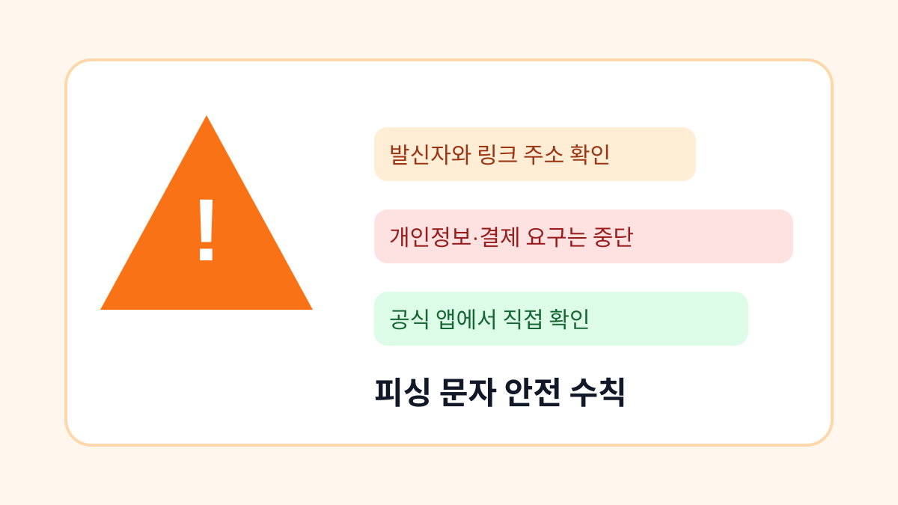

피싱 문자 의심될 때 확인해야 할 안전 수칙
택배, 과태료, 금융기관 사칭 문자가 왔을 때 링크를 누르기 전 확인할 항목을 정리합니다.

피싱 문자는 점점 실제 안내문처럼 보입니다. 택배 주소 오류, 교통 범칙금, 카드 승인, 계정 정지처럼 급하게 행동하게 만드는 문구가 많습니다. 링크를 누르기 전에 발신자, 주소, 요구 정보를 확인하는 습관이 필요합니다.
급하게 누르지 않기
피싱 문자는 대부분 시간을 압박합니다. 오늘 안에 처리하지 않으면 불이익이 생긴다고 말하거나, 이미 결제가 되었다고 놀라게 만듭니다. 이런 문자를 받으면 링크를 누르지 말고 공식 앱이나 홈페이지를 직접 열어 확인합니다.
공식 신고와 확인 경로
의심 문자는 한국인터넷진흥원 보호나라의 피싱 예방 안내를 참고할 수 있습니다. 보호나라 같은 공식 사이트를 통해 최신 피해 사례를 확인하면 비슷한 문자를 알아차리기 쉽습니다.
| 의심 신호 | 확인 방법 | 조치 |
|---|---|---|
| 짧은 링크 | 주소 미리보기 | 누르지 않기 |
| 개인정보 요구 | 공식 앱 확인 | 입력 금지 |
| 급한 결제 안내 | 카드 앱 확인 | 고객센터 문의 |
문자 링크를 누르기 전 마지막 확인
- 문자 링크를 바로 누르지 않기
- 공식 앱이나 홈페이지에서 직접 확인하기
- 주민번호, 카드번호, 인증번호 입력하지 않기
- 가족에게 전달해 비슷한 피해를 막기
- 이미 입력했다면 즉시 비밀번호 변경과 신고 진행하기
피싱 예방의 핵심은 속도를 늦추는 것입니다. 급한 문자를 받았을수록 한 번 더 멈추고 공식 경로로 확인하세요.
피싱 문자 실제 상황 예시
실제로 피싱 문자는 정상 알림과 비슷하게 보이도록 만들어집니다. 택배사 이름, 카드사 이름, 공공기관 표현을 그대로 쓰기 때문에 발신자 이름만 보고 판단하면 위험합니다. 링크를 누르기 전에는 주소 전체를 길게 눌러 미리 보거나, 아예 문자 안 링크를 쓰지 않고 공식 앱을 직접 여는 습관이 가장 안전합니다.
피싱 문자에서 피해야 할 실수
특히 인증번호를 요구하는 문자는 더 조심해야 합니다. 정상 고객센터는 문자로 온 인증번호를 다시 입력하라고 압박하지 않습니다. 이미 인증번호를 넣었다면 비밀번호 변경만으로 끝내지 말고, 로그인된 기기 목록과 최근 결제 내역까지 확인해야 피해를 줄일 수 있습니다.
피싱 문자 관련 설정을 먼저 확인해야 하는 이유
피싱 문자는 사용자가 당황한 순간을 노립니다. 택배 주소 오류, 과태료 납부, 카드 승인, 계정 정지처럼 바로 눌러야 할 것처럼 보이는 문장이 많지만, 실제 확인은 문자 안의 링크가 아니라 공식 앱이나 공식 홈페이지에서 해야 합니다. 특히 짧은 링크, 숫자와 문자가 섞인 낯선 주소, 인증번호 입력 요구가 함께 보이면 먼저 멈추는 것이 안전합니다.
피싱 문자에서 자주 생기는 실수
실수 사례로는 문자 링크를 누른 뒤 휴대폰 번호와 생년월일을 입력하고, 이어서 온 인증번호까지 넣는 경우가 많습니다. 이때 공격자는 계정 비밀번호를 바꾸거나 결제 인증을 시도할 수 있습니다. 이미 정보를 입력했다면 같은 비밀번호를 쓰는 주요 계정부터 바꾸고, 카드사와 통신사 앱에서 이상 내역을 확인해야 합니다.
피싱 문자 점검 후 다시 볼 부분
가족에게 같은 문자가 전달될 가능성도 있습니다. 부모님이나 자녀가 링크를 먼저 누르지 않도록, 의심 문자를 받으면 캡처해서 가족 단체방에 공유하고 공식 앱에서 직접 확인하라고 안내하는 것이 좋습니다. 피싱 예방은 기술보다 속도를 늦추는 습관에 가깝습니다.